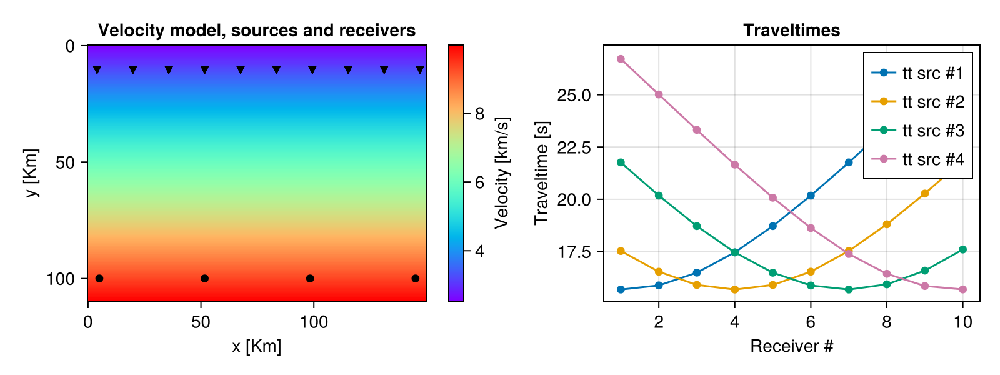
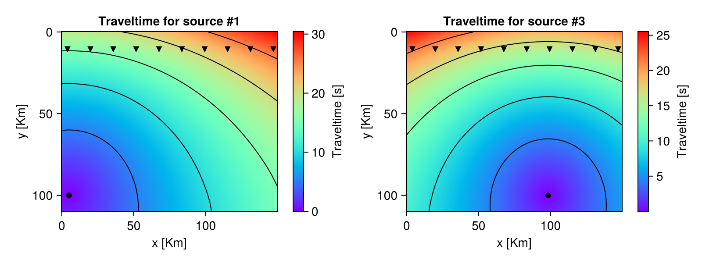
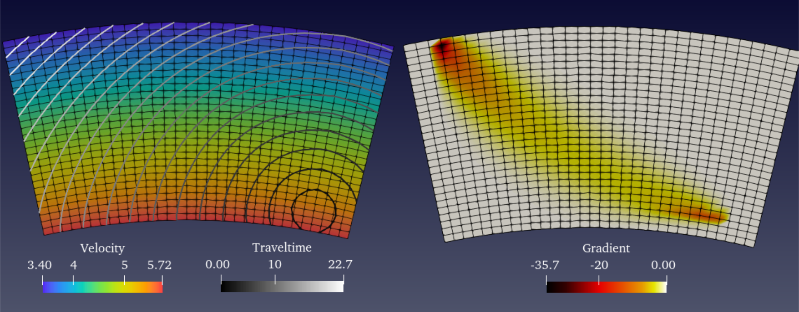
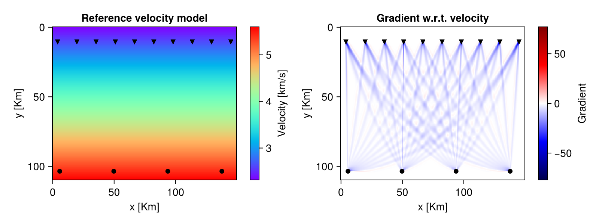
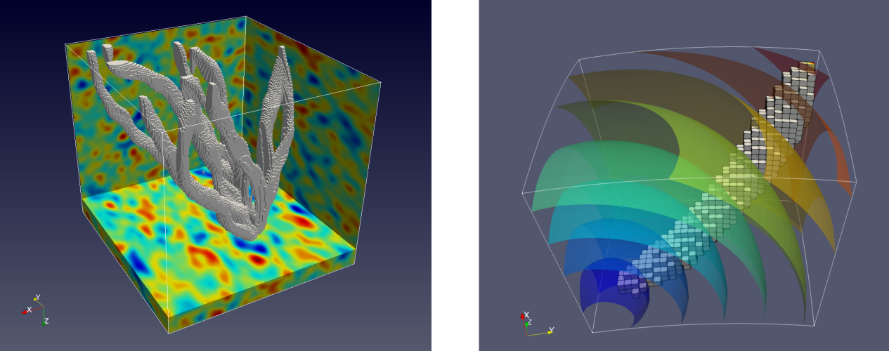

Contents
EikonalSolvers's documentation
A library to perform seismic traveltime computations by solving the eikonal equation in two (2D) and three dimensions (3D) with the possibility of computing the gradient of a misfit function with respect to the velocity model and the source location. The coordinate system can be either regular Cartesian or spherical. The forward algorithm is based on a fast marching (FMM) method (2nd order) with a refinement of the grid around the source location. The computation of the gradient relies on the discrete adjoint method.
For historical reasons, alternative solvers are available (poorly maintained), including a first order FMM method and the fast sweeping (FS) method for global updates with different kinds of local stencils. Additionally, a continuos adjoint method to calculate the gradient is also provided.
Both forward and gradient (adjoint) computations can be run in paralle using either Julia's distributed computing functions for distributed memory or threads for multicore processor. The parallelisation scheme is "by source", distributing calculations for different seismic sources to different processors.
This code is part of a larger project G⁻¹Lab (a superset of HMCLab[ZuninoGebraadetal2023]) targeting probabilistic geophysical inverse problems. Please cite the following papers if you use this code:
Andrea Zunino, Scott Keating, Andreas Fichtner (2025), A discrete adjoint method for deterministic and probabilistic eikonal-equation-based inversion of traveltime for velocity and source location, Geophysical Journal International, Volume 243, Issue 1, October 2025, ggaf283, https://doi.org/10.1093/gji/ggaf283
Andrea Zunino, Lars Gebraad, Alessandro Ghirotto, Andreas Fichtner (2023), HMCLab: a framework for solving diverse geophysical inverse problems using the Hamiltonian Monte Carlo method, Geophysical Journal International, Volume 235, Issue 3, Pages 2979–2991, https://doi.org/10.1093/gji/ggad403
Installation
To install the package simple enter into the package manager mode in Julia by typing "]" at the REPL prompt and then use add, i.e.,
(v1.11) pkg> registry add https://github.com/Ginvlab/GinvLabRegistry
(v1.11) pkg> add EikonalSolversThe package will be automatically downloaded from the web and installed.
Alternatively, use the path where the directory of the package is located, be it remote (GitHub)
(v1.11) pkg> add https://github.com/GinvLab/EikonalSolvers.jlor local
(v1.11) pkg> add /<path>/<to>/EikonalSolvers.jlTheoretical background
The eikonal equation in 3D is given by:
\[| \nabla \tau |^2 = \left( \dfrac{\partial \tau}{\partial x} \right)^2 + \left( \dfrac{\partial \tau}{\partial y} \right)^2 + \left( \dfrac{\partial \tau}{\partial z} \right)^2 = \dfrac{1}{v^2(x,y,z)}\]
where $\tau$ is the travel time, $x,y,z$ the spatial coordinates and $v$ the velocity.
In the numerical solution to the eikonal equation, there are two major components, the global scheme, which defines the strategy to update to the traveltime on the grid, i.e., the fast marching method and the local scheme, providing the finite difference stencils.
The gradient computations are based on the adjoint state method (see below). For details please refer to the paper [Zuninoetal2025].
Numerical implementation
The solver for the eikonal equation ([ZuninoGebraadetal2023]) is a second-order fast marching method (FMM) ([Sethian1996], [SethianPopovici1999]) using traditional stencils (e.g., [RawlinsonSambridge2004]), with an additional refinement of the grid around the source.
Regarding the gradient of the misfit function with respect to velocity, the misfit function (without considering the prior) is defined as
\[S = \dfrac{1}{2} \sum_i \dfrac{\left( \mathbf{\tau}_i^{\rm{calc}}(\mathbf{v})-\mathbf{\tau}_i^{\rm{obs}} \right)^2}{\sigma_i^2} \, .\]
The gradient of the above functional with respect to the velocity model $\dfrac{d S}{d \mathbf{v}}$ can be calculated efficiently using the adjoint state method (e.g., [LeungQian2006], [TreisterHaber2016]]).
In this package we employ the discrete adjoint state method to compute both gradients with respect to velocity and source location [Zuninoetal2025], which takes into account the non-linearity of the forward problem - i.e., no linearisation of the forward model and no rays are employed. The computational cost is almost independent of the number of receivers and, because of the discretization, the result is a "diffuse" sensitivity around the theoretical rays (see an example in the following).
Exported functions / API
The following sets of functions are exported by EikonalSolvers. Units are arbitrary but must be consistent.
The geometry and size of the grid is defined via structures for Cartesian coordinates (rectilinear grids) or spherical/polar coordinates (curvilinear grids):
Grid2DCart, astructdescribing the geometry and size of a 2D Cartesian grid;Grid3DCart, astructdescribing the geometry and size of a 3D Cartesian grid;Grid2DSphere, astructdescribing the geometry and size of a 2D spherical grid;Grid3DSphere, astructdescribing the geometry and size of a 3D spherical grid;
The traveltime computations are performed using the following functions:
eiktraveltime, which computes the traveltimes in a 2D or 3D model;
The gradient computations (using a 2D or 3D grid), instead, by
eikgradient, which computes the gradient of the misfit function with respect to velocity and/or source location.
Finally, the misfit functional calculation:
eikttimemisfit, computes the value (scalar) of the misfit functional for given observed traveltimes and velocity model.
Moreover, a convenience module HMCTraveltimes (see EikonalSolvers.HMCtraveltimes) is provided to facilitate the use of EikonalSolvers within the framework of Hamiltonian Monte Carlo inversion (see e.g. [ZuninoMosegaard2018]) by employing the package HMCsampler.
ExtraParams also may play an important role in certain user cases.
Parallelisation
Both forward and gradient computations are parallelised using Julia's distributed computating functions. The parallelisation is "by source", meaning that traveltimes (or gradients) for different sources are computed in parallel. Therefore if there are $N$ input sources and $P$ processors, each processor will perform computations for about $N \over P$ sources. The number of processors corresponds to the number of "threads" or "workers" (Threads.nthreads() or nworkers()) available to Julia when the computations are run. To enable parallel calculations the field parallelkind in the ExtraParams struct must be set either to :sharedmem or :distribmem" and passed to the forward or inverse routines. Default is :serial.
To get more than one thread for shared memory computing, Julia can either be started with julia -t <N> where N is the desired number of threads. To get more than one processor for distributed computing, instead, Julia can either be started with julia -p <N> where N is the desired number of processors or using addprocs(<N>) before loading the module.
Example of forward calculations
Cartesian coordinates
As an illustration in the following it is shown how to calculate traveltimes at receivers in 2D in Cartesian coordinates. Let's start with a complete example:
using EikonalSolvers
grd = Grid2DCart(hgrid=0.5,cooinit=(0.0,0.0),grsize=(300,220)) # create the Grid2D struct
nsrc = 4
nrec = 10
coordsrc = [grd.hgrid.*LinRange(10,290,nsrc) grd.hgrid.*200.0.*ones(nsrc)] # coordinates of the sources (4 sources)
coordrec = [ [grd.hgrid.*LinRange(8,294,nrec) grd.hgrid.*20.0.*ones(nrec)] for i=1:nsrc] # coordinates of the receivers (10 receivers)
velmod = 2.5 .* ones(grd.grsize...) # velocity model
# increasing velocity with depth...
for i=1:grd.grsize[2]
velmod[:,i] = 0.034 * i .+ velmod[:,i]
end
# run the traveltime computation
ttimepicks = eiktraveltime(velmod,grd,coordsrc,coordrec)The output will be a vector of vectors with 4 elements (number of sources) each of which being a 10-element array (number of receivers):
ttimepicks4-element Vector{Vector{Float64}}:
[15.680975744341035, 15.876865495861106, 16.486383772008242, 17.458808260577783, 18.715664780589695, 20.17507496205918, 21.765197285278322, 23.42860168754229, 25.121842203866873, 26.822872633110546]
[17.523235505303774, 16.531931314497577, 15.900298808467543, 15.679473166311357, 15.899929538342748, 16.53458476827757, 17.52828824495364, 18.80099727523276, 20.271208349353397, 21.86791154817694]
[21.764840632397313, 20.174276524595452, 18.714258547728477, 17.45664235986368, 16.483287071904506, 15.873527548487216, 15.680825879447445, 15.928244888134685, 16.584461026544158, 17.595902190523372]
[26.715903235950208, 25.014548284522498, 23.320146712592344, 21.657909196620068, 20.07285501943066, 18.623168029848518, 17.381629855282952, 16.430677070849104, 15.848433508089691, 15.684466696648197]Now let's analyse more in details the various components. First of we have to import the module and define the parameters of the grid using the struct Grid2D:
using EikonalSolvers
# hgrid: grid spacing
# cooinit: grid origin coordinates
# grsize: grid size
grd = Grid2DCart(hgrid=0.5,cooinit=(0.0,0.0),grsize=(300,220)) # create the Grid2D structGrid2DCart(0.5, (0.0, 0.0), (149.5, 109.5), (300, 220), 0.0:0.5:149.5, 0.0:0.5:109.5)Then define the coordinates of the sources, a two-column array (since we are in 2D) representing the $x$ and $y$ coordinates
nsrc = 4
coordsrc = [grd.hgrid.*LinRange(10,290,4) grd.hgrid.*200.0.*ones(4)]4×2 Matrix{Float64}:
5.0 100.0
51.6667 100.0
98.3333 100.0
145.0 100.0and the receivers, a "vector of arrays", i.e., a vector where each element (one element per each source) is a two-column array (since we are in 2D) representing the $x$ and $y$ coordinates
nrec = 10
coordrec = [ [grd.hgrid.*LinRange(8,294,nrec) grd.hgrid.*20.0.*ones(nrec)] for i=1:nsrc] # coordinates of the receivers (10 receivers)4-element Vector{Matrix{Float64}}:
[4.0 10.0; 19.888888888888886 10.0; … ; 131.11111111111111 10.0; 147.0 10.0]
[4.0 10.0; 19.888888888888886 10.0; … ; 131.11111111111111 10.0; 147.0 10.0]
[4.0 10.0; 19.888888888888886 10.0; … ; 131.11111111111111 10.0; 147.0 10.0]
[4.0 10.0; 19.888888888888886 10.0; … ; 131.11111111111111 10.0; 147.0 10.0]The velocity model is defined as a 2D array with size (grd.grsize)
velmod = 2.5 .* ones(grd.grsize...)
# increasing velocity with depth...
for i=1:grd.grsize[2]
velmod[:,i] = 0.034 * i .+ velmod[:,i]
endFinally, the traveltime at receivers is computed
ttimepicks = eiktraveltime(velmod,grd,coordsrc,coordrec)Now the traveltimes can be plotted, e.g., using Makie
using CairoMakie
fig = Figure(size=(800,300))
ax1 = Axis(fig[1,1][1,1],title="Velocity model, sources and receivers",xlabel="x [Km]",ylabel="y [Km]")
hm = heatmap!(ax1,grd.x,grd.y,velmod,colormap=:rainbow1)
Colorbar(fig[1,1][1,2],hm,label="Velocity [km/s]")
for cr in coordrec
scatter!(ax1,cr[:,1],cr[:,2],marker=:dtriangle,color=:black)
end
scatter!(ax1,coordsrc[:,1],coordsrc[:,2],marker=:circle,color=:black)
ax1.yreversed=true
ax2 = Axis(fig[1,2],title="Traveltimes",xlabel="Receiver #",ylabel="Traveltime [s]")
for (i,tt) in enumerate(ttimepicks)
scatterlines!(ax2,1:length(tt),tt[:],label="tt src #$i")
end
axislegend(ax2)
@show ttimepicks4-element Vector{Vector{Float64}}:
[15.680975744341035, 15.876865495861106, 16.486383772008242, 17.458808260577783, 18.715664780589695, 20.17507496205918, 21.765197285278322, 23.42860168754229, 25.121842203866873, 26.822872633110546]
[17.523235505303774, 16.531931314497577, 15.900298808467543, 15.679473166311357, 15.899929538342748, 16.53458476827757, 17.52828824495364, 18.80099727523276, 20.271208349353397, 21.86791154817694]
[21.764840632397313, 20.174276524595452, 18.714258547728477, 17.45664235986368, 16.483287071904506, 15.873527548487216, 15.680825879447445, 15.928244888134685, 16.584461026544158, 17.595902190523372]
[26.715903235950208, 25.014548284522498, 23.320146712592344, 21.657909196620068, 20.07285501943066, 18.623168029848518, 17.381629855282952, 16.430677070849104, 15.848433508089691, 15.684466696648197]To additionally return the traveltime everywhere on the grid do
ttimepicks,ttimegrid = eiktraveltime(velmod,grd,coordsrc,coordrec,returntt=true)
@show size(ttimegrid)size(ttimegrid) = (4,)The traveltime across all grid can then be visualized
using CairoMakie
fig = Figure(size=(800,300))
s = 1
ax1 = Axis(fig[1,1][1,1],title="Traveltime for source #$s",xlabel="x [Km]",ylabel="y [Km]")
hm = heatmap!(ax1,grd.x,grd.y,ttimegrid[s],colormap=:rainbow1)
Colorbar(fig[1,1][1,2],hm,label="Traveltime [s]")
contour!(ax1,grd.x,grd.y,ttimegrid[s],color=:black)
for cr in coordrec
scatter!(ax1,cr[:,1],cr[:,2],marker=:dtriangle,color=:black)
end
scatter!(ax1,coordsrc[s,1],coordsrc[s,2],marker=:circle,color=:black)
ax1.yreversed=true
s = 3
ax2 = Axis(fig[1,2][1,1],title="Traveltime for source #$s",xlabel="x [Km]",ylabel="y [Km]")
hm = heatmap!(ax2,grd.x,grd.y,ttimegrid[s],colormap=:rainbow1)
Colorbar(fig[1,2][1,2],hm,label="Traveltime [s]")
contour!(ax2,grd.x,grd.y,ttimegrid[s],color=:black)
for cr in coordrec
scatter!(ax2,cr[:,1],cr[:,2],marker=:dtriangle,color=:black)
end
scatter!(ax2,coordsrc[s,1],coordsrc[s,2],marker=:circle,color=:black)
ax2.yreversed=true The resulting traveltime array on the grid is returned as a three-dimensional array, containing a set of two-dimensional arrays, one for each source.
@show size(ttimegrid)(4,)Spherical coordinates
Here we show an example of traveltime calculation in spherical coordinates in 2D. The grid is defined in terms of the radius r and the angle θ, representing the co-latitude. In 3D there is the additional angle φ, representing the longitude. Remark: for spherical coordinates some Greek symbols are used. You can render them in Julia as following:
| Symbol | How to render |
|---|---|
| Δ | \Delta^TAB |
| θ | \theta^TAB |
| φ | \varphi^TAB |
The function for traveltimes in spherical coordinates, analogously to the Cartesian case, is traveltime2Dsphere(). The grid setup and forward computations are carried out as shown in the following script.
using EikonalSolvers
grd = Grid2DSphere(Δr=2.0,Δθ=0.2,grsize=(40,70),cooinit=(500.0,10.0)) # create the Grid2DSphere struct
coordsrc = [grd.cooinit[1].+grd.Δr*3 grd.cooinit[2].+grd.Δθ*(grd.grsize[2]-5)] # coordinates of the sources (1 source)
coordrec = [[grd.cooinit[1].+grd.Δr*(grd.grsize[1]-3) grd.cooinit[2].+grd.Δθ*3] ] # coordinates of the receivers (1 receiver), vector of arrays
velmod = 2.5 .* ones(grd.grsize...) # velocity model
# run the traveltime computation
ttimepicks = eiktraveltime(velmod,grd,coordsrc,coordrec)
nothing # hideThe following picture shows an example of computed traveltime and gradient in spherical coordinates in 2D. 
Example of gradient w.r.t velocity calculation
Cartesian coordinates
Here a synthetic example of 2D gradient computations in Cartesian coordinates is illustrated. In reality, traveltime data are "measured" from recorded seismograms, however, here we first create some synthetic "observed" traveltimes using a synthetic velocity model. First the grid and velocity model are set up, then forward calculations are performed, as in the section above Example of forward calculations.
using EikonalSolvers
hgrid=0.5
grd = Grid2DCart(hgrid=hgrid,cooinit=(0.0,0.0),grsize=(300,220)) # create the Grid2D struct
nsrc = 4
nrec = 10
coordsrc = [0.95*hgrid.*LinRange(12,290,nsrc) hgrid.*207.0.*ones(nsrc)] # coordinates of the sources (4 sources)
coordrec = [[hgrid.*LinRange(8.0,290.0,nrec) hgrid.*20.0.*ones(nrec)] for i=1:nsrc] # coordinates of the receivers (10 receivers)
velmod = 2.5 .* ones(grd.grsize...) # velocity model
# increasing velocity with depth
for i=1:grd.grsize[2]
velmod[:,i] = 0.034 * i .+ velmod[:,i]
end
# run the traveltime computation
ttpicks = eiktraveltime(velmod,grd,coordsrc,coordrec)┌ Warning: sourceboxloctt(): Shifting the source position along dimension(s) [1] by 1.0e-5 [1e-4*grd.hgrid]
└ @ EikonalSolvers ~/work/EikonalSolvers.jl/EikonalSolvers.jl/src/EikSolv/eikmainfwd.jl:1298Then the "observed" traveltime data are created by adding some Gaussian noise to the traveltimes computed above to simulate real measurements.
# standard deviation of error on observed data
stdobs = [0.15.*ones(size(ttpicks[1])) for i=1:nsrc]
# generate a "noise" array to simulate real data
noise = [stdobs[i].^2 .* randn(size(stdobs[i])) for i=1:nsrc]
# add the noise to the synthetic traveltime data
dobs = ttpicks .+ noiseNow we can finally compute the gradient of the misfit functional (see above) at a given point, i.e., the gradient is computed at a given velocity model: $\dfrac{d S}{d \mathbf{v}} \Big|_{\mathbf{v}_0}$.
# create a guess/"current" model
vel0 = 2.3 .* ones(grd.grsize...)
# increasing velocity with depth...
for i=1:grd.grsize[2]
vel0[:,i] = 0.015 * i .+ vel0[:,i]
end
# calculate the gradient of the misfit function
gradvel,misf = eikgradient(vel0,grd,coordsrc,coordrec,dobs,stdobs,:gradvel)┌ Warning: sourceboxloctt(): Shifting the source position along dimension(s) [1] by 1.0e-5 [1e-4*grd.hgrid]
└ @ EikonalSolvers ~/work/EikonalSolvers.jl/EikonalSolvers.jl/src/EikSolv/eikmainfwd.jl:1298Finally, plot the rsults
using CairoMakie
fig = Figure(size=(800,300))
ax1 = Axis(fig[1,1][1,1],title="Reference velocity model",xlabel="x [Km]",ylabel="y [Km]")
hm = heatmap!(ax1,grd.x,grd.y,vel0,colormap=:rainbow1)
Colorbar(fig[1,1][1,2],hm,label="Velocity [km/s]")
for cr in coordrec
scatter!(ax1,cr[:,1],cr[:,2],marker=:dtriangle,color=:black)
end
scatter!(ax1,coordsrc[:,1],coordsrc[:,2],marker=:circle,color=:black)
ax1.yreversed=true
ax2 = Axis(fig[1,2][1,1],title="Gradient w.r.t. velocity",xlabel="x [Km]",ylabel="y [Km]")
vmax = maximum(abs.(gradvel))
hm = heatmap!(ax2,grd.x,grd.y,gradvel,colormap=:seismic,colorrange=(-vmax,vmax))
Colorbar(fig[1,2][1,2],hm,label="Gradient")
for cr in coordrec
scatter!(ax2,cr[:,1],cr[:,2],marker=:dtriangle,color=:black)
end
scatter!(ax2,coordsrc[:,1],coordsrc[:,2],marker=:circle,color=:black)
ax2.yreversed=true The calculated gradient is an array with the same shape than the velocity model.
@show size(gradvel)(300, 220)Spherical coordinates
Here a synthetic example of 2D gradient computations in spherical coordinates is shown.
using EikonalSolvers
grd = Grid2DSphere(Δr=2.0,Δθ=0.2,grsize=(40,70),cooinit=(500.0,10.0)) # create the Grid2DSphere struct
coordsrc = [grd.cooinit[1].+grd.Δr*3 grd.cooinit[2].+grd.Δθ*(grd.grsize[2]-5)] # coordinates of the sources (1 source)
nsrc = size(coordsrc,1)
coordrec = [[grd.cooinit[1].+grd.Δr*(grd.grsize[1]-3) grd.cooinit[2].+grd.Δθ*3] for i=1:nsrc] # coordinates of the receivers (1 receiver)
# velocity model
velmod = 2.5 .* ones(grd.grsize...)
# run the traveltime computation
ttpicks = eiktraveltime(velmod,grd,coordsrc,coordrec)
# standard deviation of error on observed data
stdobs = [0.15.*ones(size(ttpicks[1])) for i=1:nsrc]
# generate a "noise" array to simulate real data
noise = [stdobs[i].^2 .* randn(size(stdobs[i])) for i=1:nsrc]
# add the noise to the synthetic traveltime data
dobs = ttpicks .+ noise
# create a guess/"current" model
vel0 = 3.0 .* ones(grd.grsize...)
# calculate the gradient of the misfit function
grad,misf = eikgradient(vel0,grd,coordsrc,coordrec,dobs,stdobs,:gradvel)
nothing # hideAn example of a (thresholded) sensitivity kernel and contouring of traveltimes in 3D, using spherical coordinates, is depicted in the following plot: 
Example of gradient w.r.t source location calculation
Here a synthetic example of 2D gradient computation w.r.t. source location in Cartesian coordinates is illustrated. In reality, traveltime data are "measured" from recorded seismograms, however, here we first create some synthetic "observed" traveltimes using a given velocity model. First the grid and velocity model are set up, then forward calculations are performed, as in the section above Example of forward calculations.
using EikonalSolvers
hgrid=0.5
grd = Grid2DCart(hgrid=hgrid,cooinit=(0.0,0.0),grsize=(300,220)) # create the Grid2D struct
nsrc = 4
nrec = 10
coordsrc = [0.95*hgrid.*LinRange(12,290,nsrc) hgrid.*207.0.*ones(nsrc)] # coordinates of the sources (4 sources)
coordrec = [[hgrid.*LinRange(8.0,290.0,nrec) hgrid.*20.0.*ones(nrec)] for i=1:nsrc] # coordinates of the receivers (10 receivers)
velmod = 2.5 .* ones(grd.grsize...) # velocity model
# increasing velocity with depth
for i=1:grd.grsize[2]
velmod[:,i] = 0.034 * i .+ velmod[:,i]
end
# run the traveltime computation
ttpicks = eiktraveltime(velmod,grd,coordsrc,coordrec)┌ Warning: sourceboxloctt(): Shifting the source position along dimension(s) [1] by 1.0e-5 [1e-4*grd.hgrid]
└ @ EikonalSolvers ~/work/EikonalSolvers.jl/EikonalSolvers.jl/src/EikSolv/eikmainfwd.jl:1298Then the "observed" traveltime data are created by adding some Gaussian noise to the traveltimes computed above to simulate real measurements.
# standard deviation of error on observed data
stdobs = [0.15.*ones(size(ttpicks[1])) for i=1:nsrc]
# generate a "noise" array to simulate real data
noise = [stdobs[i].^2 .* randn(size(stdobs[i])) for i=1:nsrc]
# add the noise to the synthetic traveltime data
dobs = ttpicks .+ noiseNow the gradient w.r.t. source location, $\dfrac{d S}{d \mathbf{x}^{\rm src}}$, can be computed as follows
# calculate the gradient of the misfit function w.r.t. source location
# notice the last argument :gradsrcloc
gradsrcloc,misf = eikgradient(velmod,grd,coordsrc,coordrec,dobs,stdobs,:gradsrcloc)┌ Warning: sourceboxloctt(): Shifting the source position along dimension(s) [1] by 1.0e-5 [1e-4*grd.hgrid]
└ @ EikonalSolvers ~/work/EikonalSolvers.jl/EikonalSolvers.jl/src/EikSolv/eikmainfwd.jl:1298The gradient is returned as an array where each row contains the partial derivatives for each source:
# now print the partial derivatives
@show(gradsrcloc)4×2 Matrix{Float64}:
0.120882 0.0779432
0.0598656 0.152987
-0.0607007 0.0446767
-0.565001 -0.630783References
- ZuninoGebraadetal2023Zunino A., Gebraad, L., Ghirotto, A. and Fichtner, A., (2023). HMCLab a framework for solving diverse geophysical inverse problems using the Hamiltonian Monte Carlo algorithm, Geophysical Journal International, Volume 235, Issue 3, December 2023, Pages 2979–2991, https://doi.org/10.1093/gji/ggad403.
- Zuninoetal2025Andrea Zunino, Scott Keating, Andreas Fichtner (2025), **A discrete adjoint method for deterministic and probabilistic eikonal-equation-based inversion of traveltime for velocity and source location, arXiv preprint arXiv:2501.13532.
- LeungQian2006Leung, S. and Qian, J. (2006). An adjoint state method for three-dimensional transmission traveltime tomography using first-arrivals. Communications in Mathematical Sciences, 4(1), 249-266.
- TreisterHaber2016Treister, Eran & Haber, Eldad. (2016). A fast marching algorithm for the factored eikonal equation. Journal of Computational Physics. 324. 210–225. 10.1016/j.jcp.2016.08.012.
- RawlinsonSambridge2004Rawlinson, N. and Sambridge, M. (2004). Wave front evolution in strongly heterogeneous layered media using the fast marching method. Geophys. J. Int., 156(3), 631-647.
- Sethian1996Sethian A. J. (1996). A fast marching level set method for monotonically advancing fronts. Proceedings of the National Academy of Sciences Feb 1996, 93 (4) 1591-1595.
- SethianPopovici1999Sethian A. J. and Popovici A. (1999). Three dimensional traveltimes computation using the Fast Marching Method. Geophysics. 64. 516-523.
- ZuninoMosegaard2018Zunino A., Mosegaard K. (2018), Integrating Gradient Information with Probabilistic Traveltime Tomography Using the Hamiltonian Monte Carlo Algorithm, 80th EAGE Conference & Exhibition, Copenhagen.